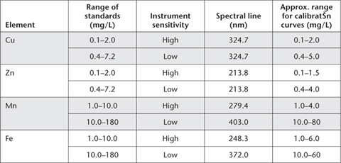

Extracting solutions containing chelating agents such as diethylenetriamine penta acetic acid (DTPA) removes micronutrient cations adsorbed on solid phases together with water-soluble constituents. As such, the test may simulate the action of plant roots. Consequently, extraction with DTPA has been used to assess the micronutrient fertility of soils (Lindsay and Norvell 1969a, 1978). The test was inferior to dilute CaCl2 for predicting the availability of soil Cd to a wide range of vegetables (Rayment 1994), while Menzies et al. (2007) report that neutral salt extractants appear to provide the most useful prediction of trace metal phytoavailability.
Table 12.1. Summary details of method codes, technologies, method titles, and notes on micronutrient methods.
Code |
Technology |
Test method |
Notes |
12A1 |
Empirical extraction – with an ICPAES or AAS finish. |
DTPA-extractable Cu, Zn, Mn and Fe. |
A popular commercial soil test in Australia. The analytical finish should have little impact on expected results. |
12B1 |
Ammonium bicarbonate/EDTA extractable Cu and Zn. |
Developed for use on the semi-arid cropping lands of Eastern Australia. It has failed to attract widespread use. |
|
12C1 |
Empirical extraction – manual colorimetric finish. |
Calcium chloride-extractable boron – manual colour. |
The manual colour finish should only be chosen when ICPAES instrumentation is unavailable. |
12C2 |
Empirical extraction – with an ICPAES finish. |
Calcium chloride-extractable B – ICPAES. |
Preferred diagnostic test for extractable soil B. Better performed than the corresponding manual colour finish. |
12D1 |
Empirical extraction – with an ICPAES or AAS finish. |
0.1 M HCl-extractable Cu, Zn, Mn and Fe. |
This diagnostic micronutrient test is popular across the sugar cane-growing regions of Queensland that are dominated by acidic soils. |
12E1 |
Empirical extraction – with an ICP-MS finish preferred. |
Calcium chloride extractable Mo. |
The same soil extract can be used for CaCl2-extractable B (Method 12C). |
This widely used method involves equilibration of air-dry soil for 2 h with extracting solution at a soil/solution ratio of 1:2. Triethanolamine helps buffer the extracting solution close to pH 7.3 and thus restricts dissolution of trace metals from soils of high pH. A pH around 7.3 also favours formation of the Zn-DTPA complex (Lindsay and Norvell 1969b), whereas CaCl2 acts to suppress carbonate solubility in calcareous soil.
Soil preparation, time of extraction and temperature of extraction affect results obtained by empirical methods for heavy metals (Soltanpour et al. 1976, 1979; Houba and Novozamsky 1998) so adherence to the described procedure is essential. It is reported that soil grinding and the method of grinding can change the apparent amount of DTPA-heavy metals present (Anon 2000). Soils can be stored in an air-dry condition, however, for several months with no measurable effects on the amount of Zn and Cu extracted.
Nowadays, measurement of Cu, Zn, Fe and Mn by ICPAES is preferred but AAS provides an acceptable alternative analytical finish for DTPA-extractable heavy metals. Figure 12.1 shows the influence of elemental concentrations of DTPA-extractable Cu, Zn, Fe and Mn on percent robust coefficients of variation (Robust % CVs) from interlaboratory proficiency programs of the ASPAC from 1997–2007 (e.g. Peverill and Johnstone 1997; Rayment et al. 2007). All 72 soils used were air-dry and finely ground, while laboratories used either ICPAES or AAS for the analytical finish. Grand median robust % CVs were 11, 14, 15 and 23% for grand median soil concentrations of 29.4, 1.42, 0.82 and 46.8 mg/kg for Mn, Zn, Cu and Fe, respectively.
Figure 12.1. DTPA-extractable trace metal concentrations (Cu, Zn, Fe, Mn) (Method 12A1) vs Robust % CVs (1997–2007) derived from ASPAC soil inter-laboratory proficiency programs.
DTPA Extracting Solution
This solution is 0.005 M with respect to DTPA, 0.01 M to CaCl2 and 0.10 M to triethanolamine (TEA). For 1.0 L of extracting solution, dissolve 1.97 g diethylenetriamine penta acetic acid (DTPA), 1.47 g calcium chloride dihydrate (CaCl2.2H2O) and 14.92 g triethanolamine [N(CH2CH2OH)3] separately in deionised water and combine. Add ≈6.8 g of 35% w/w HCl and dilute to ≈990 mL with deionised water. Check pH and adjust to 7.3±0.05 with either dilute HCl or triethanolamine, then make volume to 1.0 L. Store in a teflon or low density polyethylene container not previously used to store any of the four metals under test; the solution remains stable for at least three months if kept cool (≈4°C) and away from direct sunlight.
Copper Primary Standard
1 mL contains 1 mg of Cu.
Clean a piece of Cu foil (see Note 1) then accurately weigh 1.000 g of the cleaned metal and place in a 1 L volumetric flask. Dissolve in 20 mL of 1+1 HNO3 and dilute to volume with deionised water.
Zinc Primary Standard
1 mL contains 1 mg of Zn.
Clean a piece of Zn rod (see Note 1) then accurately weigh 1.000 g of the cleaned metal and place in a 1 L volumetric flask. Dissolve in 20 mL 1+1 HCl and dilute to volume with deionised water.
Manganese Primary Standard
1 mL contains 5 mg of Mn.
Weigh 6.8712 g anhydrous manganous sulfate (prepared by dehydrating manganese sulfate monohydrate (MnSO4.H2O) at 200°C for 4 h) into a 500 mL volumetric flask. Dissolve in a mixture of 200 mL water and 1 mL 18 M H2SO4 and make to volume with deionised water. Dilution of a commercial Primary Standard Solution is an alternative (see Note 1).
Iron Primary Standard
1 mL contains 5 mg Fe.
Weigh 17.5538 g ammonium ferrous sulfate [(NH4)2SO4FeSO4.6H2O] and transfer to a 500 mL volumetric flask. Dissolve in deionised water containing 1 mL 18 M H2SO4 and make to volume with deionised water. Dilution of a commercial Primary Standard Solution is an alternative (see Note 1).
Mixed ‘Low Strength’ Secondary Standard
Take 10.0 mL Cu Primary Standard, 10.0 mL Zn Primary Standard, 20.0 mL Mn Primary Standard and 20.0 mL Fe Primary Standard and dilute with deionised water to 1.0 L. This solution contains 10 mg/L of both Cu and Zn and 100 mg/L of both Mn and Fe.
Mixed ‘High Strength’ Secondary Standard
Take 40.0 mL Cu Primary Standard, 40.0 mL Zn Primary Standard, 200 mL Mn Primary Standard and 200 mL Fe Primary Standard and dilute with deionised water to 1.0 L. This solution contains 40 mg/L of both Cu and Zn and 1000 mg/L of both Mn and Fe.
Mixed Working Standards
Take aliquots of freshly prepared ‘Low’ and ‘High’ Strength Secondary Standard Solutions, as detailed in Tables 12.1 and 12.2. Add 83 mL triple strength DTPA extracting solution (45 g triethanolmine, 5.91 g DTPA, 4.41 g CaCl2.2H2O and 20.65 g HCl to 1 L with deionised water) and make volume of each working standard to 250 mL with deionised water. Store in black polyethylene bottles or in the dark in standard polyethylene or teflon bottles. Actual solution concentrations and equivalent soil contents for a 1:2 soil/extract ratio are given in Tables 12.2 and 12.3.
A reagent blank with no soil should be included with each batch of samples.
Weigh 25.0 g of air-dry soil (<2 mm) into a 100 or 250 mL polyethylene bottle. Add 50 mL DTPA extracting solution, stopper, and mechanically shake end-over-end continuously for 2 h at 25°C. Filter (No. 2 Whatman paper) or centrifuge the extracts without delay, discarding the first portion, and retain the particle-free extracts for analysis. Measure metal concentrations in these filtrates by ICPAES or AAS as soon as possible to avoid microbial growth and/or chemical changes.
Use an appropriate selection of working standards and determine concentrations of each element (mg/kg) from the appropriate calibration curve, after adjusting for any significant reagent blank. It is important to follow manufacturer’s recommendations with respect to instrument parameters and wavelength selections: see Notes 2 and 3.
Report each element (Cu, Zn, Mn, Fe; mg/kg) on an air-dry basis.
Table 12.2. Volumes of ‘Low’ Strength Secondary Standard and consequential concentrations of ‘Low Range’ Mixed Working Standards for DTPA-extractable Cu, Zn, Mn and Fe.

Table 12.3. Volumes of ‘High’ Strength Secondary Standard and consequential concentrations of ‘High Range’ Mixed Working Standards for DTPA-extractable Cu, Zn, Mn and Fe.

Table 12.4. Typical instrument parameters for analysis of DTPA soil extracts by AAS.

1. Cu and Zn metal should be first polished with steel wool to remove any surface coating. Immerse a piece of the metal in the appropriate acid; (1+1) HNO3 for Cu, (1+1) HCl for Zn, until a clean surface is visible. Wash with deionised water and glass-distilled acetone. Dry at room temperature and weigh immediately. Alternatively, commercial Primary Standard Solutions may be used for the four elements.
2. With AAS, atomic spectral lines vary with element and with the concentration range of standards selected for use. Guidelines are given in Table 12.4.
3. Preferred spectral lines for ICPAES are typically 324.754, 213.856, 257.610 and 259.940 nm for Cu, Zn, Mn and Fe, respectively. No background corrections are necessary when these wavelengths are used over concentration ranges of 0–10 mg/L for Cu and Zn and 0–240 mg/L for Mn and Fe.